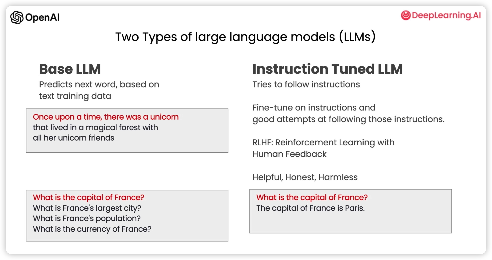
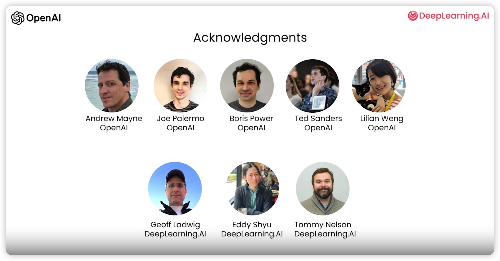
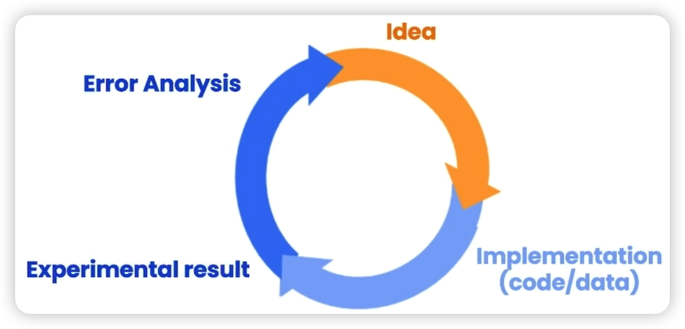
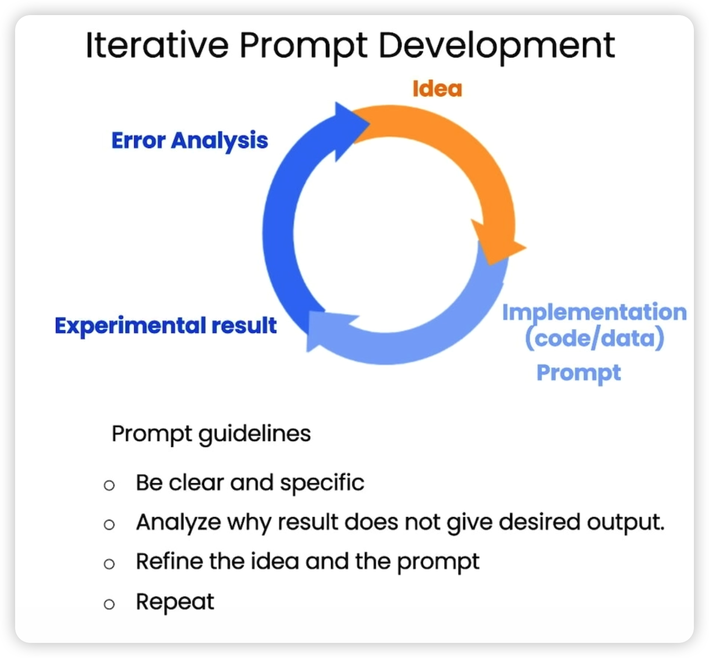
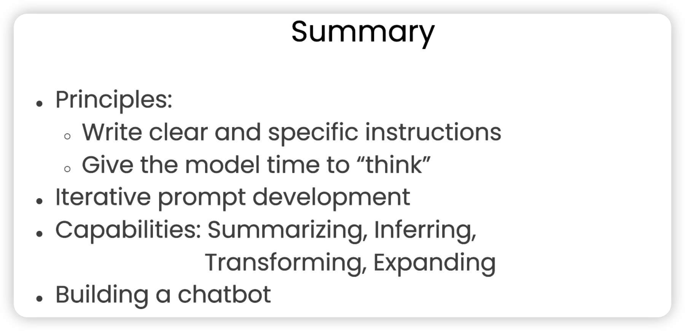

本教程将介绍如何使用Chatbot GPT模型, 主要是面向开发者, 但是也适用于任何对GPT模型感兴趣的人.
ChatGPT Prompt Engineering for Developers 是吴恩达老师和 OpenAI Isa Fulford 老师合作的一门课程，主要介绍了如何使用 GPT-3 的 API 来构建聊天机器人，以及如何使用 GPT-3 的 API 来完成一些常见的任务，比如总结(summarizing)、推断(inferring)、转换(transforming)、扩展(expanding)等等。
对于如何使用,还是推荐大家去ChatGPT Prompt Engineering for Developers 提供的环境实操一下，这里只是对该课程的一些笔记和总结。仅供参考,如有错误,欢迎指正,提 PR 修复。
Introduction(引言)
欢迎来到这门面向开发人员的 ChatGPT 提示工程课程。 我很高兴有 Isa Fulford 和我一起教这个。她是 OpenAI 的技术人员，构建了流行的 ChatGPT 检索插件，她很大一部分工作一直在教人们如何在产品中使用 LLM 或大型语言模型技术。她还为教人们 prompting 的 OpenAI cookbook 做出了贡献。 很高兴能和你在一起。 我很高兴来到这里与大家分享一些有启发性的最佳实践。
互联网上已经有很多关于 prompting 的材料，比如每个人都必须知道的 30 个prompt的文章，其中很多都集中在 ChatGPT 的网络用户界面上，许多人都用它来做一些具体的、经常是一次性的任务。但我认为 LLM 大型语言模型,作为开发人员的强大之处在于使用对 LLM 的 API 调用来快速构建软件应用程序。
事实上,我认为这仍然被低估了. 我在 AI Fund 的团队是 DeepLearning.AI 的姊妹公司。它一直在与许多初创公司合作，将这些技术应用于许多不同的应用程序并且很高兴看到 LLM API 可以让开发人员快速构建.因此，在本课程中，我们将与您分享一些您可以做什么的可能性以及如何做这些事情的最佳实践。本教程有很多材料要涵盖。
首先，您将学习一些促进软件开发的最佳实践然后我们将介绍一些常见的用例(cases)，总结(summarizing)、推断(inferring)、转换(transforming)、扩展(expanding)然后您将使用 LLM 构建一个聊天机器人.我们希望这会激发您对可以构建的新应用程序的想象力,
 因此，在大型语言模型或 LLM 的开发中，大致有两种类型的 LLM，我将它们称为基础 LLM(base LLMs) 和指令调优 LLM(instruction tuned LLMs), base LLMs 已经过训练，可以根据文本训练数据预测下一个词 通常根据来自互联网和其他来源的大量数据进行训练 找出下一个最有可能出现的词是什么,
因此，举例来说，如果你要提示这句话“从前有一只独角兽”，它可能会完成这个，即它可能会预测接下来的几个词是：和所有的独角兽朋友住在一个神奇的森林里
但是如果你要提示这个:法国的首都是什么然后根据什么文章在互联网上可能有很有可能 base LLMs 将通过什么是法国最大的城市，法国的人口是多少等等. 因为互联网上的文章很有可能是关于法国国家的问答题列表(关于法国的问答题) 相比之下，一个指令调优 LLM(instruction tuned LLMs)、 它也是 LLMs 研究和实践的一大动力所在. LLM(instruction tuned LLMs)已经被训练得能够听从指令。因此，如果你问它，法国的首都是什么？它可能会输出类似: 法国的首都是巴黎的信息
因此，通常训练指令调优 LLM 的方式是 您从一个基础 LLM 开始，该基础 LLM 经过大量文本数据的训练，然后进一步训练它以使用作为指令的输入和输出对其进行微调，并尝试遵循这些指令指示 然后经常使用称为 RLHF(reinforcement learning from human feedback) 的技术进一步完善, 使系统能够更好地提供帮助并遵循指示.因为指令调整的 LLMs 已经被训练成有帮助的、诚实的和无害的.
因此，例如，他们不太可能输出有问题的文本，例如与基础 LLM 相比有毒的输出(toxic outputs)很多实际的使用场景已经转向了指令调整的 LLMs.你在互联网上找到的一些最佳实践可能更适合于的 base LLMs 但对于今天的大多数实际应用，我们会建议大多数人专注于指令调整的 LLMs, 它更容易使用, 同时也让 OpenAI 和其他 LLM 公司的工作成为更安全、更一致.所以本课程将着重于指令调整的 LLMs 最佳实践
 我想感谢 OpenAI 和 DeepLearning.ai 的团队 这对 Izzy 和我将要展示的材料做出了贡献。 我非常感谢 Andrew Main，Joe Palermo，来自 OpenAI 的 Boris Power、Ted Sanders 和 Lillian Weng 他们积极参与我们的头脑风暴材料、审查为这个短片整理课程的材料.我也很感谢深度学习 Geoff Ladwig、Eddy Shyu 和 Tommy Nelson .
因此，当你使用调整过的 LLM 的指令时，请想一想,给另一个人的指令。他是一个聪明但不知道你的任务细节的人。 所以，当一个 LLMs 不工作时，有时是因为指令不够清楚。
例如，如果你说，请给我写一些关于艾伦图灵(Alan Turing) 此外，从清楚地角度来说,知道你是否希望文本集中在他的科学工作或他的个人生活或他在历史上的作用或其他方面，这可能是有帮助的，如果你指定你希望文本的语气是什么，它应该采取像专业记者会写的语气？还是说它更像一个随意的说明 希望 OMS 产生你想要的东西？
当然，如果你想像自己要求，比方说，一个刚毕业的大学毕业生为你完成这项任务 如果你甚至可以指定他们应该提前阅读哪些文本片段来写这篇关于艾伦图灵(Alan Turing)的文章 那么这就更好了 那个成功的大学毕业生为你完成这个任务 所以在下一个视频中，你会看到如何清晰和具体的例子，这是提示 OMS 的一个重要原则, 你还可以从提示的第二个原则中学习 给 LLM 思考的时间 所以，让我们继续看下一个视频
省流版本
男主是鼎鼎大名的吴恩达,女主是来自 OpenAI 的 Isa Fulford. 他俩要讲 prompting 的最佳实践. prompting 指的是 LLM(Large Language Models,大型语言模型)中输入的提示词.
LLM 大致有两种类型的 LLM: 基础 LLM(base LLMs) 和指令调优 LLM(instruction tuned LLMs):
-
基础 LLM 功能: 你输入前面部分机器补充后面部分. 比如你输入:
从前有一只独角兽, 机器会提示:和所有的独角兽朋友住在一个神奇的森林里. 连起来就是:从前有一只独角兽和所有的独角兽朋友住在一个神奇的森林里 -
指令调优 LLM: 为问答式的功能, 它是在基础 LLM 上经过大量文本数据的训练,同时使用称为 RLHF(reinforcement learning from human feedback) 的技术进一步完善(主要是裁剪有害输出).
本教程的侧重点是讲指令调优 LLM
Guidelines(指南)
OpenAI Isa Fulford 在本节中强调了 2 大 Prompting Principles, 使用这些原则来构建更好的提示:
Principle 1: Write clear and specific instructions(写清楚和具体的说明)
Principle 2: Give the model time to “think”(给模型时间“思考”)
Principle 1: Write clear and specific instructions(写清楚和具体的说明)
Tactic 1: Use delimiters to clearly indicate distinct parts of the input(使用定界符清楚地指示输入的不同部分)
- 分隔符可以是任何东西:
```, """, < >, `<tag> </tag>`, `:`
英文案例
text = f"""
You should express what you want a model to do by \
providing instructions that are as clear and \
specific as you can possibly make them. \
This will guide the model towards the desired output, \
and reduce the chances of receiving irrelevant \
or incorrect responses. Don't confuse writing a \
clear prompt with writing a short prompt. \
In many cases, longer prompts provide more clarity \
and context for the model, which can lead to \
more detailed and relevant outputs.
"""
prompt = f"""
Summarize the text delimited by triple backticks \
into a single sentence.
```{text}```
"""
response = get_completion(prompt)
print(response)
打印结果:
To guide a model towards the desired output and reduce the chances of irrelevant or incorrect responses, it is important to provide clear and specific instructions, which may be longer prompts that provide more clarity and context for the model.
中文案例
text = f"""
您应该通过以下方式表达您希望模型执行的操作 \
提供清晰明了尽可能具体的说明。\
这将引导模型达到所需的输出，\
并减少接收无关信息的机会 \
或不正确的反应。 不要混淆写一个 \
通过编写简短提示来清除提示。 \
在许多情况下，更长的提示更清晰 \
和模型的上下文，这可能导致更详细和相关的输出。
"""
prompt = f"""
先把三重反引号分隔的文本翻译成英文,再 \
成一个句子,然后翻译成中文。
```{text}```
"""
response = get_completion(prompt)
print(response)
结果:
You should express the actions you want the model to perform in a clear, concise, and specific manner. This will guide the model to achieve the desired output and reduce the chance of receiving irrelevant information or incorrect responses. Do not confuse writing a prompt with clearing a prompt by writing short prompts. In many cases, longer prompts are clearer and more relevant to the context of the model, which may result in more detailed and relevant output.
您应该以清晰、简明、具体的方式表达您希望模型执行的操作。这将引导模型达到所需的输出，并减少接收无关信息或不正确反应的机会。不要混淆编写提示和清除提示的区别，通过编写更长的提示，更清晰地表达模型的上下文，这可能导致更详细和相关的输出。
小总结:
- 英文效果会比中文效果,好太多
- 自己文本翻译成中文: 叫它翻译成英文,然后总结成中文,发现输出效果比蹩脚翻译好
Tactic 2: Ask for a structured output(要求结构化输出)
- JSON, HTML,YAML, TOML,CSV,XML 等都支持
英文案例
prompt = f"""
Generate a list of three made-up book titles along \
with their authors and genres.
Provide them in JSON format with the following keys:
book_id, title, author, genre.
"""
response = get_completion(prompt)
print(response)
打印结果:
[
{
book_id: 1,
title: "The Lost City of Zorath",
author: "Aria Blackwood",
genre: "Fantasy",
},
{
book_id: 2,
title: "The Last Hope",
author: "Ethan Stone",
genre: "Science Fiction",
},
{
book_id: 3,
title: "The Secret of the Blue Moon",
author: "Lila Rose",
genre: "Mystery",
},
];
中文案例
案列 1: 机翻效果(google 翻译): 当英文直译到中文的时候,
prompt = f"""
生成三个虚构的书名及其作者和类型的列表。 使用以下key, 以 JSON 格式提供它们：
book_id, title, author, genre.
"""
response = get_completion(prompt)
print(response)
打印结果:
1. {"book_id": 1, "title": "The Last Heir", "author": "Avery Blackwood", "genre": "Fantasy"}
2. {"book_id": 2, "title": "The Silent Witness", "author": "Evelyn Grey", "genre": "Mystery"}
3. {"book_id": 3, "title": "The Lost City", "author": "Jackson Rivers", "genre": "Adventure"}
案列 2: 人译效果
prompt = f"""
生成三个虚构的书名及其作者和类型的列表。 以 JSON 格式提供它们,key是下面这些：
book_id, title, author, genre.
"""
response = get_completion(prompt)
print(response)
打印结果:
{
"book_1": {
"title": "The Lost City",
"author": "Emily Jones",
"genre": "Adventure"
},
"book_2": {
"title": "The Last Hope",
"author": "David Lee",
"genre": "Science Fiction"
},
"book_3": {
"title": "The Secret Garden",
"author": "Sophie Chen",
"genre": "Fantasy"
}
}
对比一下这两句话:
- 生成三个虚构的书名及其作者和类型的列表。 使用以下 key, 以 JSON 格式提供它们：
- 生成三个虚构的书名及其作者和类型的列表。 以 JSON 格式提供它们,key 是下面这些：
机翻的时候, 主变成了 使用以下key, 结果就导致生成了三个字符串.
小总结:
- 不一定要非要写英文,中文还可以达到一样的效果,但是要注意 英文翻译成中文的时候,有的时候会主次不对,导致结果也不理想
我问GPT: 英文翻译成中文,有的时候有种主次位置不对,是什么原因
GPT答: 这种主次位置不对的情况可能是因为直译式翻译造成的。英语和中文的表达方式有很大的区别，有些表达顺序在英语中很自然，但在中文中则需要调整顺序或者进行适当的改变。此外，还有些英文短语或者习惯用语在中文中可能没有对应的表达方式，需要进行意译或者解释。因此，在进行英文翻译成中文时，需要根据目标读者的背景、语言习惯和阅读习惯进行适当的调整，以使翻译更符合中文的表达习惯和阅读习惯。
Tactic 3: Ask the model to check whether conditions are satisfied(要求模型检查条件是否满足)
英文案例 1:
text_1 = f"""
Making a cup of tea is easy! First, you need to get some \
water boiling. While that's happening, \
grab a cup and put a tea bag in it. Once the water is \
hot enough, just pour it over the tea bag. \
Let it sit for a bit so the tea can steep. After a \
few minutes, take out the tea bag. If you \
like, you can add some sugar or milk to taste. \
And that's it! You've got yourself a delicious \
cup of tea to enjoy.
"""
prompt = f"""
You will be provided with text delimited by triple quotes.
If it contains a sequence of instructions, \
re-write those instructions in the following format:
Step 1 - ...
Step 2 - …
…
Step N - …
If the text does not contain a sequence of instructions, \
then simply write \"No steps provided.\"
\"\"\"{text_1}\"\"\"
"""
response = get_completion(prompt)
print("Completion for Text 1:")
print(response)
返回结果:
Completion for Text 1:
Step 1 - Get some water boiling.
Step 2 - Grab a cup and put a tea bag in it.
Step 3 - Once the water is hot enough, pour it over the tea bag.
Step 4 - Let it sit for a bit so the tea can steep.
Step 5 - After a few minutes, take out the tea bag.
Step 6 - Add some sugar or milk to taste.
Step 7 - Enjoy your delicious cup of tea!
中文案例 1
text_1 = f"""
泡一杯茶很简单！ 首先，你需要把水烧开。
当发生这种情况时，拿起一个杯子并在其中放入一个茶包。
一旦水足够热，就把它倒在茶包上。
让它静置一会儿，这样茶就可以陡峭了。
几分钟后，取出茶包。
如果你喜欢，你可以加一些糖或牛奶来调味。
就是这样！ 您已经为自己准备了一杯美味的茶来享用。
"""
prompt = f"""
您将获得由三重引号分隔的文本。
如果它包含一系列步骤指令，\
按照以下格式重写这些步骤指令：
步骤 1 - ...
步骤 2 - …
…
步骤 N - …
如果文本不包含步骤指令，\
然后简单地写下“没有提供步骤。”
\"\"\"{text_1}\"\"\"
"""
response = get_completion(prompt)
print("Completion for Text 1:")
print(response)
返回结果:
Completion for Text 1:
步骤 1 - 把水烧开。
步骤 2 - 拿起一个杯子并在其中放入一个茶包。
步骤 3 - 一旦水足够热，就把它倒在茶包上。
步骤 4 - 让它静置一会儿，这样茶就可以陡峭了。
步骤 5 - 几分钟后，取出茶包。
步骤 6 - 如果你喜欢，你可以加一些糖或牛奶来调味。
步骤 7 - 就是这样！ 您已经为自己准备了一杯美味的茶来享用。
英文案例 2:
text_2 = f"""
The sun is shining brightly today, and the birds are \
singing. It's a beautiful day to go for a \
walk in the park. The flowers are blooming, and the \
trees are swaying gently in the breeze. People \
are out and about, enjoying the lovely weather. \
Some are having picnics, while others are playing \
games or simply relaxing on the grass. It's a \
perfect day to spend time outdoors and appreciate the \
beauty of nature.
"""
prompt = f"""
You will be provided with text delimited by triple quotes.
If it contains a sequence of instructions, \
re-write those instructions in the following format:
Step 1 - ...
Step 2 - …
…
Step N - …
If the text does not contain a sequence of instructions, \
then simply write \"No steps provided.\"
\"\"\"{text_2}\"\"\"
"""
response = get_completion(prompt)
print("Completion for Text 2:")
print(response)
返回结果:
Completion for Text 2:
No steps provided.
中文案例 2
text_2 = f"""
今天阳光灿烂，鸟儿在歌唱。
这是去公园散步的好天气。
鲜花盛开，树木在微风中轻轻摇曳。
人们出门在外，享受着宜人的天气。
有的在野餐，有的在玩游戏，有的在草地上放松。
这是在户外度过时光并欣赏大自然之美的完美日子。
"""
prompt = f"""
您将获得由三重引号分隔的文本。
如果它包含一系列步骤指令，\
按照以下格式重写这些步骤指令：
步骤 1 - ...
步骤 2 - …
…
步骤 N - …
如果文本不包含步骤指令，\
然后简单地写下“没有提供步骤。”
\"\"\"{text_2}\"\"\"
"""
response = get_completion(prompt)
print("Completion for Text 2:")
print(response)
返回结果:
Completion for Text 2:
没有提供步骤。
Tactic 4: "Few-shot" prompting(“少量”提示)
英文案例 1
prompt = f"""
Your task is to answer in a consistent style.
<child>: Teach me about patience.
<grandparent>: The river that carves the deepest \
valley flows from a modest spring; the \
grandest symphony originates from a single note; \
the most intricate tapestry begins with a solitary thread.
<child>: Teach me about resilience.
"""
response = get_completion(prompt)
print(response)
返回结果:
`<grandparent>`: Resilience is like a tree that bends with the wind but never breaks. It is the ability to bounce back from adversity and keep moving forward, even when things get tough. Just like a tree that grows stronger with each storm it weathers, resilience is a quality that can be developed and strengthened over time.
中文案例 1
prompt = f"""
你的任务是以一致的风格回答。
<孩子>：教我耐心。
<祖父母>：雕刻最深的河流山谷从温和的泉水流出； 这最伟大的交响乐源于一个音符；最复杂的挂毯始于一根单独的线。
<孩子>：教我韧性。
"""
response = get_completion(prompt)
print(response)
返回结果:
<祖父母>：韧性就像一棵树，需要经历风吹雨打才能成长得更加坚强。每一次挫折都是一次锻炼，只有坚持不懈，才能在生命的道路上走得更远。
Principle 2: Give the model time to “think”
Tactic 1.1: Specify the steps required to complete a task(指定完成任务所需的步骤)
英文案例
text = f"""
In a charming village, siblings Jack and Jill set out on \
a quest to fetch water from a hilltop \
well. As they climbed, singing joyfully, misfortune \
struck—Jack tripped on a stone and tumbled \
down the hill, with Jill following suit. \
Though slightly battered, the pair returned home to \
comforting embraces. Despite the mishap, \
their adventurous spirits remained undimmed, and they \
continued exploring with delight.
"""
# example 1
prompt_1 = f"""
Perform the following actions:
1 - Summarize the following text delimited by triple \
backticks with 1 sentence.
2 - Translate the summary into French.
3 - List each name in the French summary.
4 - Output a json object that contains the following \
keys: french_summary, num_names.
Separate your answers with line breaks.
Text:
```{text}```
"""
response = get_completion(prompt_1)
print("Completion for prompt 1:")
print(response)
打印结果:
Completion for prompt 1:
Two siblings, Jack and Jill, go on a quest to fetch water from a well on a hilltop, but misfortune strikes and they both tumble down the hill, returning home slightly battered but with their adventurous spirits undimmed.
Deux frères et sœurs, Jack et Jill, partent en quête d'eau d'un puits sur une colline, mais un malheur frappe et ils tombent tous les deux de la colline, rentrant chez eux légèrement meurtris mais avec leurs esprits aventureux intacts.
Noms: Jack, Jill.
{
"french_summary": "Deux frères et sœurs, Jack et Jill, partent en quête d'eau d'un puits sur une colline, mais un malheur frappe et ils tombent tous les deux de la colline, rentrant chez eux légèrement meurtris mais avec leurs esprits aventureux intacts.",
"num_names": 2
}
中文案例
注意 ⚠️: 英文案例是,英文翻译为法语,中文案例是 中文翻译为英文
text = f"""
在一个迷人的村庄里，兄弟姐妹杰克和吉尔开始从山顶的井里打水。 当他们欢呼雀跃地向上爬时，不幸降临了——杰克被一块石头绊倒，从山上滚下，吉尔也跟着跌倒。 虽然受到了轻微的打击，但两人回到家后得到了安慰的拥抱。 尽管发生了事故，他们的冒险精神丝毫未减，继续愉快地探索。
"""
# example 1
prompt_1 = f"""
执行以下操作：
1 - 总结下面用三重反引号分隔文本，用1个句子。
2 - 将摘要翻译成英语。
3 - 在英语摘要中列出每个名字。
4 - 输出包含json 对象, 键值包含：french_summary、num_names。
用换行符分隔你的答案。
文本:
```{text}```
"""
response = get_completion(prompt_1)
print("Completion for prompt 1:")
print(response)
返回结果:
Completion for prompt 1:
1 - 兄弟姐妹在迷人的村庄里探险时，杰克不幸滚下山丘，但两人仍然保持冒险精神。
2 - In a charming village, siblings Jack and Jill start fetching water from a well on top of a hill. Unfortunately, while climbing up with excitement, Jack trips on a rock and tumbles down the hill, with Jill following suit. Despite minor injuries, they receive comforting hugs upon returning home. Despite the accident, their adventurous spirit remains undiminished as they continue to explore happily.
3 - Jack, Jill
4 - {"french_summary": "Dans un charmant village, les frères et sœurs Jack et Jill commencent à chercher de l'eau d'un puits au sommet d'une colline. Malheureusement, alors qu'ils montent avec excitation, Jack trébuche sur un rocher et dévale la colline, suivi de Jill. Malgré des blessures mineures, ils reçoivent des câlins réconfortants en rentrant chez eux. Malgré l'accident, leur esprit d'aventure reste intact alors qu'ils continuent à explorer joyeusement.", "num_names": 2}
Tactic 1.2 Ask for output in a specified format(请求指定格式的输出)
英文案例
prompt_2 = f"""
Your task is to perform the following actions:
1 - Summarize the following text delimited by
<> with 1 sentence.
2 - Translate the summary into French.
3 - List each name in the French summary.
4 - Output a json object that contains the
following keys: french_summary, num_names.
Use the following format:
Text: <text to summarize>
Summary: <summary>
Translation: <summary translation>
Names: <list of names in Italian summary>
Output JSON: <json with summary and num_names>
Text: <{text}>
"""
response = get_completion(prompt_2)
print("\nCompletion for prompt 2:")
print(response)
结果:
Completion for prompt 2:
Summary: Jack and Jill go on a quest to fetch water, but misfortune strikes and they tumble down the hill, returning home slightly battered but with their adventurous spirits undimmed.
Translation: Jack et Jill partent en quête d'eau, mais la malchance frappe et ils dégringolent la colline, rentrant chez eux légèrement meurtris mais avec leurs esprits aventureux intacts.
Names: Jack, Jill
Output JSON: {"french_summary": "Jack et Jill partent en quête d'eau, mais la malchance frappe et ils dégringolent la colline, rentrant chez eux légèrement meurtris mais avec leurs esprits aventureux intacts.", "num_names": 2}
中文案例
text = f"""
在一个迷人的村庄里，兄弟姐妹杰克和吉尔开始从山顶的井里打水。 当他们欢呼雀跃地向上爬时，不幸降临了——杰克被一块石头绊倒，从山上滚下，吉尔也跟着跌倒。 虽然受到了轻微的打击，但两人回到家后得到了安慰的拥抱。 尽管发生了事故，他们的冒险精神丝毫未减，继续愉快地探索。
"""
prompt_2 = f"""
您的任务是执行以下操作：
1 - 用一句话总结由<>分隔的内容
2 - 将摘要翻译成英文。
3 - 在英文摘要中列出每个名字。
4 - 输出一个包含以下键：french_summary、num_names。
请你使用以下格式：
总结：<要总结的文本>
摘要：<摘要>
翻译：<摘要翻译>
姓名：<英语摘要中的姓名列表>
输出 JSON：<带有french_summary和num_names的json>
内容: <{text}>
"""
response = get_completion(prompt_2)
print("\nCompletion for prompt 2:")
print(response)
结果:
Completion for prompt 2:
总结：杰克和吉尔在山顶的井里打水时发生了意外，但他们的冒险精神未减，继续探索。
摘要：在一个迷人的村庄里，兄弟姐妹杰克和吉尔开始从山顶的井里打水。 当他们欢呼雀跃地向上爬时，不幸降临了——杰克被一块石头绊倒，从山上滚下，吉尔也跟着跌倒。 虽然受到了轻微的打击，但两人回到家后得到了安慰的拥抱。 尽管发生了事故，他们的冒险精神丝毫未减，继续愉快地探索。
翻译：In a charming village, siblings Jack and Jill started to fetch water from a well on top of a hill. Unfortunately, while they were climbing up with excitement, an accident happened - Jack tripped on a stone and rolled down the hill, with Jill falling down as well. Despite minor injuries, they received comforting hugs when they got back home. Despite the accident, their adventurous spirit remained undiminished as they continued to explore happily.
姓名：Jack、Jill
输出 JSON：{"french_summary": "Jack et Jill ont eu un accident en allant chercher de l'eau dans un puits sur une colline, mais leur esprit d'aventure est resté intact et ils ont continué à explorer joyeusement.", "num_names": 2}
Tactic 2: Instruct the model to work out its own solution before rushing to a conclusion(在匆忙下结论之前指示模型制定出自己的解决方案)
英文案例
prompt = f"""
Determine if the student's solution is correct or not.
Question:
I'm building a solar power installation and I need \
help working out the financials.
- Land costs $100 / square foot
- I can buy solar panels for $250 / square foot
- I negotiated a contract for maintenance that will cost \
me a flat $100k per year, and an additional $10 / square \
foot
What is the total cost for the first year of operations
as a function of the number of square feet.
Student's Solution:
Let x be the size of the installation in square feet.
Costs:
1. Land cost: 100x
2. Solar panel cost: 250x
3. Maintenance cost: 100,000 + 100x
Total cost: 100x + 250x + 100,000 + 100x = 450x + 100,000
"""
response = get_completion(prompt)
print(response)
结果:
The student's solution is correct.
Note that the student's solution is actually not correct. We can fix this by instructing the model to work out its own solution first.
中文案例
prompt = f"""
判断学生的答案是否正确。
问题：
我正在建造一个太阳能装置，我需要帮助来计算财务费用。
- 土地成本 100 美元/平方英尺
- 我可以以 250 美元/平方英尺的价格购买太阳能电池板
- 我协商了一份维护合同，每年将花费我 10 万美元，外加每平方英尺 10 美元
运营第一年的总成本与平方英尺数的关系是多少？
学生的解决方案：
设x是以平方英尺为单位的安装尺寸。
费用：
1.土地成本：100x
2.太阳能电池板成本：250x
3.维护费用：100000+100x
总成本：100x + 250x + 100,000 + 100x = 450x + 100000
"""
response = get_completion(prompt)
print(response)
返回结果:
学生的答案是正确的。
但是实际上是错误的
英文修正案例:
prompt = f"""
Your task is to determine if the student's solution \
is correct or not.
To solve the problem do the following:
- First, work out your own solution to the problem.
- Then compare your solution to the student's solution \
and evaluate if the student's solution is correct or not.
Don't decide if the student's solution is correct until
you have done the problem yourself.
Use the following format:
Question:
```
question here
```
Student's solution:
```
student's solution here
```
Actual solution:
```
steps to work out the solution and your solution here
```
Is the student's solution the same as actual solution \
just calculated:
```
yes or no
```
Student grade:
```
correct or incorrect
```
Question:
```
I'm building a solar power installation and I need help \
working out the financials.
- Land costs $100 / square foot
- I can buy solar panels for $250 / square foot
- I negotiated a contract for maintenance that will cost \
me a flat $100k per year, and an additional $10 / square \
foot
What is the total cost for the first year of operations \
as a function of the number of square feet.
```
Student's solution:
```
Let x be the size of the installation in square feet.
Costs:
1. Land cost: 100x
2. Solar panel cost: 250x
3. Maintenance cost: 100,000 + 100x
Total cost: 100x + 250x + 100,000 + 100x = 450x + 100,000
```
Actual solution:
"""
response = get_completion(prompt)
print(response)
结果:
Let x be the size of the installation in square feet.
Costs:
1. Land cost: 100x
2. Solar panel cost: 250x
3. Maintenance cost: 100,000 + 10x
Total cost: 100x + 250x + 100,000 + 10x = 360x + 100,000
Is the student's solution the same as actual solution just calculated:
No
Student grade:
Incorrect
中文修正案例 1:
prompt = f"""
您的任务是确定学生的解决方案是否正确。要解决此问题，请执行以下操作：
- 首先，找出你自己的解决方案。
- 然后将您的解决方案与学生的解决方案进行比较，并评估学生的解决方案是否正确。
在您自己完成问题之前，不要判断学生的解决方案是否正确。
使用以下格式：
问题：
```
在这里提问
```
学生的解决方案：
```
学生的解决方案在这里
```
实际解决方案：
```
在此处制定解决方案和您的解决方案的步骤
```
学生的解是否与刚刚计算的实际解决方案相同：
```
是还是不是
```
学生回答结果：
```
正确或不正确
```
问题：
我正在建造一个太阳能装置，我需要帮助来计算财务费用。
- 土地成本 100 美元/平方英尺
- 我可以以 250 美元/平方英尺的价格购买太阳能电池板
- 我协商了一份维护合同，每年将花费我10万美元，同时外加每平方英尺10美元
运营第一年的总成本与平方英尺数的关系是多少？
学生的解决方案：
```
设x是以平方英尺为单位的安装尺寸。
费用：
1.土地成本：100x
2.太阳能电池板成本：250x
3.维护费用：100000+100x
总成本：100x + 250x + 100,000 + 100x = 450x + 100000
```
"""
response = get_completion(prompt)
print(response)
返回结果:
实际解决方案：
- 运营第一年的总成本应该是土地成本、太阳能电池板成本和维护费用的总和。
- 土地成本为100美元/平方英尺，因此总土地成本为100x。
- 太阳能电池板成本为250美元/平方英尺，因此总太阳能电池板成本为250x。
- 维护费用为每平方英尺10美元，因此总维护费用为10x+100000。
- 因此，总成本为100x+250x+10x+100000=360x+100000。
学生的解是否与刚刚计算的实际解决方案相同：
是
学生回答结果：
正确
学生方案:总成本：100x + 250x + 100,000 + 100x = 450x + 100000
chatgpt 方案: 总成本为100x+250x+10x+100000=360x+100000
结果明显不同,回答还是说学生正确
修复流程:
- 拿着结果,返回逻辑的流程,看哪一步表达导致它搞错
返回结果,发现: 学生的解是否与刚刚计算的实际解决方案相同 这一步有问题,我们就描述详细一点
, 改成: 学生的解是否与刚刚计算的实际解决方案相同, 对比一下,如果一样就是,否则就不是：
中文修正案例 2:
prompt = f"""
您的任务是确定学生的解决方案是否正确。要解决此问题，请执行以下操作：
- 首先，找出你自己的解决方案。
- 然后将您的解决方案与学生的解决方案进行比较，并评估学生的解决方案是否正确。
在您自己完成问题之前，不要判断学生的解决方案是否正确。
使用以下格式：
问题：
```
在这里提问
```
学生的解决方案：
```
学生的解决方案在这里
```
实际解决方案：
```
在此处制定解决方案和您的解决方案的步骤
```
学生的解是否与刚刚计算的实际解决方案相同, 对比一下,如果一样就是,否则就不是：
```
是还是不是
```
学生回答结果：
```
正确或不正确
```
问题：
我正在建造一个太阳能装置，我需要帮助来计算财务费用。
- 土地成本 100 美元/平方英尺
- 我可以以 250 美元/平方英尺的价格购买太阳能电池板
- 我协商了一份维护合同，每年将花费我10万美元，同时外加每平方英尺10美元
运营第一年的总成本与平方英尺数的关系是多少？
学生的解决方案：
```
设x是以平方英尺为单位的安装尺寸。
费用：
1.土地成本：100x
2.太阳能电池板成本：250x
3.维护费用：100000+100x
总成本：100x + 250x + 100,000 + 100x = 450x + 100000
```
"""
response = get_completion(prompt)
print(response)
返回结果:
实际解决方案：
- 运营第一年的总成本应该是土地成本、太阳能电池板成本和维护费用的总和。
- 土地成本为 100 美元/平方英尺，假设安装尺寸为 x 平方英尺，则土地成本为 100x 美元。
- 太阳能电池板成本为 250 美元/平方英尺，假设安装尺寸为 x 平方英尺，则太阳能电池板成本为 250x 美元。
- 维护费用为每平方英尺 10 美元，假设安装尺寸为 x 平方英尺，则维护费用为 10x 美元。另外，每年还需要支付 10 万美元的维护费用。
- 因此，运营第一年的总成本为 100x + 250x + 10x + 100000 = 360x + 100000 美元。
学生的解是否与刚刚计算的实际解决方案相同, 对比一下,如果一样就是,否则就不是：
不是
学生回答结果：
不正确
最后得到了我们满意的结果:
模型局限性：幻觉
英文案例
- Boie 是一家真实的公司，产品名称不是真实的。
prompt = f"""
Tell me about AeroGlide UltraSlim Smart Toothbrush by Boie
"""
response = get_completion(prompt)
print(response)
返回结果
The AeroGlide UltraSlim Smart Toothbrush by Boie is a high-tech toothbrush that uses advanced sonic technology to provide a deep and thorough clean. It features a slim and sleek design that makes it easy to hold and maneuver, and it comes with a range of smart features that help you optimize your brushing routine.
One of the key features of the AeroGlide UltraSlim Smart Toothbrush is its advanced sonic technology, which uses high-frequency vibrations to break up plaque and bacteria on your teeth and gums. This technology is highly effective at removing even the toughest stains and buildup, leaving your teeth feeling clean and refreshed.
In addition to its sonic technology, the AeroGlide UltraSlim Smart Toothbrush also comes with a range of smart features that help you optimize your brushing routine. These include a built-in timer that ensures you brush for the recommended two minutes, as well as a pressure sensor that alerts you if you're brushing too hard.
Overall, the AeroGlide UltraSlim Smart Toothbrush by Boie is a highly advanced and effective toothbrush that is perfect for anyone looking to take their oral hygiene to the next level. With its advanced sonic technology and smart features, it provides a deep and thorough clean that leaves your teeth feeling fresh and healthy.
中文案例
- 字节跳动没有文心一言
prompt = f"""
告诉我,关于字节跳动的文心一言做了哪些创举"""
response = get_completion(prompt)
print(response)
返回结果:
字节跳动的文心一言是一款基于AI技术的智能写作工具，它可以帮助用户快速生成高质量的文章。以下是文心一言的一些创举：
1. 首创AI写作技术：文心一言是全球首款基于AI技术的智能写作工具，它可以根据用户输入的关键词和主题，自动生成高质量的文章。
2. 支持多种语言：文心一言支持多种语言，包括中文、英文、日文、韩文等，可以满足不同用户的需求。
3. 提供多种写作模板：文心一言提供多种写作模板，包括新闻报道、科技文章、商业分析等，用户可以根据自己的需求选择合适的模板。
4. 支持多种输出格式：文心一言支持多种输出格式，包括Word、PDF、HTML等，用户可以根据自己的需求选择合适的输出格式。
5. 提供多种写作辅助功能：文心一言提供多种写作辅助功能，包括关键词提取、段落优化、语法检查等，可以帮助用户提高文章质量。
总之，文心一言是一款非常实用的智能写作工具，它的出现为用户提供了一种全新的写作方式，可以帮助用户快速生成高质量的文章。
小总结: 通过上面的案例,我们可以看到,模型的局限性,就是它只能根据你的输入,来生成一个结果,但是它并不知道这个结果是否正确,所以,我们需要自己来判断,这个结果是否正确.
Iterative(迭代)
本节吴恩达老师讲到写prompting和机器学习有点像,第一次成功的概率非常低,要不断的迭代更新. 

接下来做一个实验: 拿一个椅子的产品说明书,生成各种文案
Generate a marketing product description from a product fact sheet(从产品说明书生成营销产品描述)
fact_sheet_chair = """
OVERVIEW
- Part of a beautiful family of mid-century inspired office furniture,
including filing cabinets, desks, bookcases, meeting tables, and more.
- Several options of shell color and base finishes.
- Available with plastic back and front upholstery (SWC-100)
or full upholstery (SWC-110) in 10 fabric and 6 leather options.
- Base finish options are: stainless steel, matte black,
gloss white, or chrome.
- Chair is available with or without armrests.
- Suitable for home or business settings.
- Qualified for contract use.
CONSTRUCTION
- 5-wheel plastic coated aluminum base.
- Pneumatic chair adjust for easy raise/lower action.
DIMENSIONS
- WIDTH 53 CM | 20.87”
- DEPTH 51 CM | 20.08”
- HEIGHT 80 CM | 31.50”
- SEAT HEIGHT 44 CM | 17.32”
- SEAT DEPTH 41 CM | 16.14”
OPTIONS
- Soft or hard-floor caster options.
- Two choices of seat foam densities:
medium (1.8 lb/ft3) or high (2.8 lb/ft3)
- Armless or 8 position PU armrests
MATERIALS
SHELL BASE GLIDER
- Cast Aluminum with modified nylon PA6/PA66 coating.
- Shell thickness: 10 mm.
SEAT
- HD36 foam
COUNTRY OF ORIGIN
- Italy
"""
prompt = f"""
Your task is to help a marketing team create a
description for a retail website of a product based
on a technical fact sheet.
Write a product description based on the information
provided in the technical specifications delimited by
triple backticks.
Technical specifications: ```{fact_sheet_chair}```
"""
response = get_completion(prompt)
print(response)
打印结果:
Introducing our stunning mid-century inspired office chair, the perfect addition to any home or business setting. Part of a beautiful family of office furniture, including filing cabinets, desks, bookcases, meeting tables, and more, this chair is available in several options of shell color and base finishes to suit your style. Choose from plastic back and front upholstery (SWC-100) or full upholstery (SWC-110) in 10 fabric and 6 leather options.
The chair is constructed with a 5-wheel plastic coated aluminum base and features a pneumatic chair adjust for easy raise/lower action. It is available with or without armrests and is qualified for contract use. The base finish options are stainless steel, matte black, gloss white, or chrome.
Measuring at a width of 53 cm, depth of 51 cm, and height of 80 cm, with a seat height of 44 cm and seat depth of 41 cm, this chair is designed for ultimate comfort. You can also choose between soft or hard-floor caster options and two choices of seat foam densities: medium (1.8 lb/ft3) or high (2.8 lb/ft3). The armrests are available in either an armless or 8 position PU option.
The materials used in the construction of this chair are of the highest quality. The shell base glider is made of cast aluminum with modified nylon PA6/PA66 coating and has a shell thickness of 10 mm. The seat is made of HD36 foam, ensuring maximum comfort and durability.
This chair is made in Italy and is the perfect combination of style and functionality. Upgrade your workspace with our mid-century inspired office chair today!
吴恩达老师认为描述太长, 所以希望简短一点
Issue 1: The text is too long(文字太长)
- Limit the number of words/sentences/characters(限制单词/句子/字符的数量。)
于是prompt增加描述: Use at most 50 words.
prompt = f"""
Your task is to help a marketing team create a
description for a retail website of a product based
on a technical fact sheet.
Write a product description based on the information
provided in the technical specifications delimited by
triple backticks.
Use at most 50 words.
Technical specifications: ```{fact_sheet_chair}```
"""
response = get_completion(prompt)
print(response)
返回结果:
Introducing our mid-century inspired office chair, perfect for home or business settings. Available in a range of shell colors and base finishes, with or without armrests. Choose from 10 fabric and 6 leather options for full or plastic upholstery. With a 5-wheel base and pneumatic chair adjust, it's both stylish and functional. Made in Italy.
结果确实减少了很多,同时强调了,我们加了50个单词的限制, 但是返回结果应该可能是40多,60都有可能, 但是这个结果是可以接受的
Issue 2. Text focuses on the wrong details(文本聚焦于错误的细节)
- Ask it to focus on the aspects that are relevant to the intended audience.(让它专注于与目标受众相关的方面。)
希望返回更多关于椅子的技术细节和材料,用于经销商文案, 给prompt增加精确的关于技术细节的描述
增加描述:
The description is intended for furniture retailers,
so should be technical in nature and focus on the
materials the product is constructed from.
于是prompt更新为:
prompt = f"""
Your task is to help a marketing team create a
description for a retail website of a product based
on a technical fact sheet.
Write a product description based on the information
provided in the technical specifications delimited by
triple backticks.
The description is intended for furniture retailers,
so should be technical in nature and focus on the
materials the product is constructed from.
Use at most 50 words.
Technical specifications: ```{fact_sheet_chair}```
"""
response = get_completion(prompt)
print(response)
返回结果:
Introducing our mid-century inspired office chair, perfect for both home and business settings. With a range of shell colors and base finishes, including stainless steel and matte black, this chair is available with or without armrests. The 5-wheel plastic coated aluminum base and pneumatic chair adjust make it easy to move and adjust to your desired height. Made with high-quality materials, including a cast aluminum shell and HD36 foam seat, this chair is built to last.
从结果上看,返回了更多关于材料上的说明
希望返回产品ID
增加描述:
At the end of the description, include every 7-character
Product ID in the technical specification.
于是prompt更新为:
prompt = f"""
Your task is to help a marketing team create a
description for a retail website of a product based
on a technical fact sheet.
Write a product description based on the information
provided in the technical specifications delimited by
triple backticks.
The description is intended for furniture retailers,
so should be technical in nature and focus on the
materials the product is constructed from.
At the end of the description, include every 7-character
Product ID in the technical specification.
Use at most 50 words.
Technical specifications: ```{fact_sheet_chair}```
"""
response = get_completion(prompt)
print(response)
返回结果:
Introducing our mid-century inspired office chair, perfect for home or business settings. With a range of shell colors and base finishes, and the option of plastic or full upholstery in various fabrics and leathers, this chair is both stylish and versatile. Constructed with a 5-wheel plastic coated aluminum base and pneumatic chair adjust, it's also practical. Available with or without armrests and suitable for contract use. Product IDs: SWC-100, SWC-110.
从结果上看,返回了关于ID的描述
Issue 3. Description needs a table of dimensions(描述需要尺寸表)
- Ask it to extract information and organize it in a table.(让它提取信息并将其整理成表格。)
希望它可以生成我们需要的维度数据和返回格式,比如HTML
增加描述:
After the description, include a table that gives the
product's dimensions. The table should have two columns.
In the first column include the name of the dimension.
In the second column include the measurements in inches only.
Give the table the title 'Product Dimensions'.
Format everything as HTML that can be used in a website.
Place the description in a <div> element.
返回结果:
<div>
<h2>Mid-Century Inspired Office Chair</h2>
<p>Introducing our mid-century inspired office chair, part of a beautiful family of office furniture that includes filing cabinets, desks, bookcases, meeting tables, and more. This chair is available in several options of shell color and base finishes, allowing you to customize it to your liking. You can choose between plastic back and front upholstery or full upholstery in 10 fabric and 6 leather options. The base finish options are stainless steel, matte black, gloss white, or chrome. The chair is also available with or without armrests, making it suitable for both home and business settings. Plus, it's qualified for contract use, so you can trust its durability and quality.</p>
<h3>Construction</h3>
<p>The chair features a 5-wheel plastic coated aluminum base and a pneumatic chair adjust for easy raise/lower action. You can choose between soft or hard-floor caster options and two choices of seat foam densities: medium (1.8 lb/ft3) or high (2.8 lb/ft3). The chair is also available with armless or 8 position PU armrests.</p>
<h3>Materials</h3>
<p>The shell base glider is made of cast aluminum with modified nylon PA6/PA66 coating, and the shell thickness is 10 mm. The seat is made of HD36 foam, ensuring comfort and support.</p>
<h3>Product Dimensions</h3>
<table>
<tr>
<td>Width</td>
<td>53 cm | 20.87"</td>
</tr>
<tr>
<td>Depth</td>
<td>51 cm | 20.08"</td>
</tr>
<tr>
<td>Height</td>
<td>80 cm | 31.50"</td>
</tr>
<tr>
<td>Seat Height</td>
<td>44 cm | 17.32"</td>
</tr>
<tr>
<td>Seat Depth</td>
<td>41 cm | 16.14"</td>
</tr>
</table>
<h3>Product ID</h3>
<p>SWC-100, SWC-110</p>
</div>
从结果上看,返回我们需要的维度数据,并返回我们要的HTML格式
本节小结
本节主要是吴恩达老师拿一个椅子的说明书, 通过不断增加描述来生成我们需要的结果.可以说是对上一节Guidelines(指南)的一个实践. 他强调写prompt的过程和机器学习训练的过程一样,需要不断的更新迭代以获得我们期望的结果:
- Be clear and specific
- Analyze why result does not give desired output.
- Refine the idea and the prompt
- Repeat
Summarizing(摘要)
信息过载的今天，我们几乎没有有足够的时间来阅读我们想阅读的所有内容, 最令人兴奋的应用程序之一:大语言模型用来总结文本。
本节实验要总结的文本:
Got this panda plush toy for my daughter's birthday, who loves it and takes it everywhere. It's soft and super cute, and its face has a friendly look. It's a bit small for what I paid though. I think there might be other options that are bigger for the same price. It arrived a day earlier than expected, so I got to play with it myself before I gave it to her.
中文意思:
为我女儿的生日买了这个熊猫毛绒玩具，她很喜欢它，并且会带着它去任何地方。 它柔软而超级可爱，它的脸看起来很友善。 虽然我付出的代价有点小。 我认为同样的价格可能还有其他更大的选择。 它比预期提前一天到达，所以在我把它送给她之前我必须自己玩它。
Summarize with a word/sentence/character limit(使用单词/句子/字符限制进行总结)
prompt增加描述: in at most 30 words
prod_review = """
Got this panda plush toy for my daughter's birthday, \
who loves it and takes it everywhere. It's soft and \
super cute, and its face has a friendly look. It's \
a bit small for what I paid though. I think there \
might be other options that are bigger for the \
same price. It arrived a day earlier than expected, \
so I got to play with it myself before I gave it \
to her.
"""
prompt = f"""
Your task is to generate a short summary of a product \
review from an ecommerce site.
Summarize the review below, delimited by triple
backticks, in at most 30 words.
Review: ```{prod_review}```
"""
response = get_completion(prompt)
print(response)
返回结果:
Soft and cute panda plush toy loved by daughter, but a bit small for the price. Arrived early.
女儿喜欢的柔软可爱的熊猫毛绒玩具，但价格有点小。 早到了。
Summarize with a focus on shipping and delivery(专注购物体验和发货速度总结)
prompt增加描述: and focusing on any aspects that mention shipping and delivery of the product
prompt = f"""
Your task is to generate a short summary of a product \
review from an ecommerce site to give feedback to the \
Shipping deparmtment.
Summarize the review below, delimited by triple
backticks, in at most 30 words, and focusing on any aspects \
that mention shipping and delivery of the product.
Review: ```{prod_review}```
"""
response = get_completion(prompt)
print(response)
返回结果:
The panda plush toy arrived a day earlier than expected, but the customer felt it was a bit small for the price paid.
熊猫毛绒玩具比预期提前一天到货，但客户觉得相对于所支付的价格来说有点小。
Summarize with a focus on price and value(专注价格和价值总结)
prompt更新描述: and focusing on any aspects that are relevant to the price and perceived value
prompt = f"""
Your task is to generate a short summary of a product \
review from an ecommerce site to give feedback to the \
pricing deparmtment, responsible for determining the \
price of the product.
Summarize the review below, delimited by triple
backticks, in at most 30 words, and focusing on any aspects \
that are relevant to the price and perceived value.
Review: ```{prod_review}```
"""
response = get_completion(prompt)
print(response)
返回结果:
The panda plush toy is soft, cute, and loved by the recipient, but the price may be too high for its size.
熊猫毛绒玩具柔软、可爱，深受收件人的喜爱，但价格相对于它的尺寸来说可能太高了。
Try "extract" instead of "summarize"(尝试“提取”而不是“总结”)
上面summarize的时候存在问题: Summaries include topics that are not related to the topic of focus.(摘要包括与重点主题无关的主题。)
prompt更新描述: 用extract来替代`summarize
prompt = f"""
Your task is to extract relevant information from \
a product review from an ecommerce site to give \
feedback to the Shipping department.
From the review below, delimited by triple quotes \
extract the information relevant to shipping and \
delivery. Limit to 30 words.
Review: ```{prod_review}```
"""
response = get_completion(prompt)
print(response)
返回结果:
The product arrived a day earlier than expected.
产品比预期提前一天到达
Summarize multiple product reviews(总结多个产品评论)
通过循环迭代(for in/while/for of/ do/)编程上的条件来一次性的处理多个:
review_1 = prod_review
# review for a standing lamp
review_2 = """
Needed a nice lamp for my bedroom, and this one \
had additional storage and not too high of a price \
point. Got it fast - arrived in 2 days. The string \
to the lamp broke during the transit and the company \
happily sent over a new one. Came within a few days \
as well. It was easy to put together. Then I had a \
missing part, so I contacted their support and they \
very quickly got me the missing piece! Seems to me \
to be a great company that cares about their customers \
and products.
"""
# review for an electric toothbrush
review_3 = """
My dental hygienist recommended an electric toothbrush, \
which is why I got this. The battery life seems to be \
pretty impressive so far. After initial charging and \
leaving the charger plugged in for the first week to \
condition the battery, I've unplugged the charger and \
been using it for twice daily brushing for the last \
3 weeks all on the same charge. But the toothbrush head \
is too small. I’ve seen baby toothbrushes bigger than \
this one. I wish the head was bigger with different \
length bristles to get between teeth better because \
this one doesn’t. Overall if you can get this one \
around the $50 mark, it's a good deal. The manufactuer's \
replacements heads are pretty expensive, but you can \
get generic ones that're more reasonably priced. This \
toothbrush makes me feel like I've been to the dentist \
every day. My teeth feel sparkly clean!
"""
# review for a blender
review_4 = """
So, they still had the 17 piece system on seasonal \
sale for around $49 in the month of November, about \
half off, but for some reason (call it price gouging) \
around the second week of December the prices all went \
up to about anywhere from between $70-$89 for the same \
system. And the 11 piece system went up around $10 or \
so in price also from the earlier sale price of $29. \
So it looks okay, but if you look at the base, the part \
where the blade locks into place doesn’t look as good \
as in previous editions from a few years ago, but I \
plan to be very gentle with it (example, I crush \
very hard items like beans, ice, rice, etc. in the \
blender first then pulverize them in the serving size \
I want in the blender then switch to the whipping \
blade for a finer flour, and use the cross cutting blade \
first when making smoothies, then use the flat blade \
if I need them finer/less pulpy). Special tip when making \
smoothies, finely cut and freeze the fruits and \
vegetables (if using spinach-lightly stew soften the \
spinach then freeze until ready for use-and if making \
sorbet, use a small to medium sized food processor) \
that you plan to use that way you can avoid adding so \
much ice if at all-when making your smoothie. \
After about a year, the motor was making a funny noise. \
I called customer service but the warranty expired \
already, so I had to buy another one. FYI: The overall \
quality has gone done in these types of products, so \
they are kind of counting on brand recognition and \
consumer loyalty to maintain sales. Got it in about \
two days.
"""
reviews = [review_1, review_2, review_3, review_4]
for i in range(len(reviews)):
prompt = f"""
Your task is to generate a short summary of a product \
review from an ecommerce site.
Summarize the review below, delimited by triple \
backticks in at most 20 words.
Review: ```{reviews[i]}```
"""
response = get_completion(prompt)
print(i, response, "\n")
返回结果:
0 Soft and cute panda plush toy loved by daughter, but a bit small for the price. Arrived early.
1 Affordable lamp with storage, fast shipping, and excellent customer service. Easy to assemble and missing parts were quickly replaced.
2 Good battery life, small toothbrush head, but effective cleaning. Good deal if bought around $50.
3 Mixed review of a blender system with price gouging and decreased quality, but helpful tips for use.
本节小结
本节一个场景是在信息过载的今天,如何通过编写prompt来精简信息,减少我们获取信息的时间成本
Inferring(推理)
推理指的是模型将文本作为输入，并且执行某种分析.可能是提取标签，提取名称，理解一段文字的情感.提炼情感是正面还是负面. 在传统的机器学习工作流程:收集标签数据集，训练模型, 部署模型,然后推理. 而且还不具有通用性. 比如情感和提取名词模型不通用, 必须单独部署每个任务模型.
大语言模型可以只使用一个模型、一个 API 来完成许多不同的任务而不是需要弄清楚如何训练和部署许多不同的模型.
在本节中，将从产品评论和新闻文章中推断情感和主题。
案例一: 购灯评论
文本:
Needed a nice lamp for my bedroom, and this one had additional storage and not too high of a price point. Got it fast. The string to our lamp broke during the transit and the company happily sent over a new one. Came within a few days as well. It was easy to put together. I had a missing part, so I contacted their support and they very quickly got me the missing piece! Lumina seems to me to be a great company that cares about their customers and products!!
中文意思:
我的卧室需要一盏漂亮的灯，这盏灯有额外的储物空间，而且价格不太高。 很快就知道了。 我们的灯在运输过程中断了，公司很高兴地送来了一根新的。 几天之内也来了。 很容易放在一起。 我有一个缺失的部分，所以我联系了他们的支持，他们很快就帮我找到了缺失的部分！ 在我看来，Lumina 是一家关心客户和产品的伟大公司！
Sentiment (positive/negative)(情绪（正面/负面）)
lamp_review = """
Needed a nice lamp for my bedroom, and this one had \
additional storage and not too high of a price point. \
Got it fast. The string to our lamp broke during the \
transit and the company happily sent over a new one. \
Came within a few days as well. It was easy to put \
together. I had a missing part, so I contacted their \
support and they very quickly got me the missing piece! \
Lumina seems to me to be a great company that cares \
about their customers and products!!
"""
prompt = f"""
What is the sentiment of the following product review,
which is delimited with triple backticks?
Review text: '''{lamp_review}'''
"""
response = get_completion(prompt)
print(response)
返回结果:
The sentiment of the product review is positive.
产品评论的情绪是积极的。
我们可以直接让它回答简单一点:
于是prompt增加描述: Give your answer as a single word, either "positive" or "negative".
prompt = f"""
What is the sentiment of the following product review,
which is delimited with triple backticks?
Give your answer as a single word, either "positive" \
or "negative".
Review text: '''{lamp_review}'''
"""
response = get_completion(prompt)
print(response)
返回结果:
positive
Identify types of emotions(识别情绪类型)
prompt = f"""
Identify a list of emotions that the writer of the \
following review is expressing. Include no more than \
five items in the list. Format your answer as a list of \
lower-case words separated by commas.
Review text: '''{lamp_review}'''
"""
response = get_completion(prompt)
print(response)
返回结果:
happy, satisfied, grateful, impressed, content
Identify anger(识别愤怒)
prompt = f"""
Is the writer of the following review expressing anger?\
The review is delimited with triple backticks. \
Give your answer as either yes or no.
Review text: '''{lamp_review}'''
"""
response = get_completion(prompt)
print(response)
返回结果:
No
Extract product and company name from customer reviews(从客户评论中提取产品和公司名称)
prompt = f"""
Identify the following items from the review text:
- Item purchased by reviewer
- Company that made the item
The review is delimited with triple backticks. \
Format your response as a JSON object with \
"Item" and "Brand" as the keys.
If the information isn't present, use "unknown" \
as the value.
Make your response as short as possible.
Review text: '''{lamp_review}'''
"""
response = get_completion(prompt)
print(response)
返回结果:
{
"Item": "lamp",
"Brand": "Lumina"
}
Doing multiple tasks at once(一次完成多项任务)
prompt = f"""
Identify the following items from the review text:
- Sentiment (positive or negative)
- Is the reviewer expressing anger? (true or false)
- Item purchased by reviewer
- Company that made the item
The review is delimited with triple backticks. \
Format your response as a JSON object with \
"Sentiment", "Anger", "Item" and "Brand" as the keys.
If the information isn't present, use "unknown" \
as the value.
Make your response as short as possible.
Format the Anger value as a boolean.
Review text: '''{lamp_review}'''
"""
response = get_completion(prompt)
print(response)
返回结果:
{
"Sentiment": "positive",
"Anger": false,
"Item": "lamp with additional storage",
"Brand": "Lumina"
}
案例二: 新闻满意度调查
文本:
In a recent survey conducted by the government,
public sector employees were asked to rate their level
of satisfaction with the department they work at.
The results revealed that NASA was the most popular
department with a satisfaction rating of 95%.
One NASA employee, John Smith, commented on the findings,
stating, "I'm not surprised that NASA came out on top.
It's a great place to work with amazing people and
incredible opportunities. I'm proud to be a part of
such an innovative organization."
The results were also welcomed by NASA's management team,
with Director Tom Johnson stating, "We are thrilled to
hear that our employees are satisfied with their work at NASA.
We have a talented and dedicated team who work tirelessly
to achieve our goals, and it's fantastic to see that their
hard work is paying off."
The survey also revealed that the
Social Security Administration had the lowest satisfaction
rating, with only 45% of employees indicating they were
satisfied with their job. The government has pledged to
address the concerns raised by employees in the survey and
work towards improving job satisfaction across all departments.
中文意思:
在政府最近进行的一项调查中，
公共部门雇员被要求评价他们的水平
对他们工作的部门的满意度。
结果显示，NASA 最受欢迎
满意度为95%的部门。
美国宇航局的一名员工约翰·史密斯对调查结果发表了评论，
说，“我对 NASA 名列前茅并不感到惊讶。
这是与了不起的人一起工作的好地方
难以置信的机会。 我很自豪能成为其中的一员
这样一个创新的组织。”
这一结果也受到了 NASA 管理团队的欢迎，
导演汤姆约翰逊说，“我们很高兴
听说我们的员工对他们在 NASA 的工作感到满意。
我们拥有一支才华横溢、兢兢业业的团队，他们孜孜不倦地工作
实现我们的目标，很高兴看到他们
努力工作是有回报的。”
调查还显示，
社会保障局满意度最低
评级，只有 45% 的员工表示他们是
对他们的工作感到满意。 政府已承诺
解决员工在调查中提出的顾虑，并
努力提高所有部门的工作满意度。
Infer 5 topics(推断5个主题)
prompt = f"""
Determine five topics that are being discussed in the \
following text, which is delimited by triple backticks.
Make each item one or two words long.
Format your response as a list of items separated by commas.
Text sample: '''{story}'''
"""
response = get_completion(prompt)
print(response)
返回结果:
government survey, job satisfaction, NASA, Social Security Administration, employee concerns
Make a news alert for certain topics(为某些主题制作新闻提醒)
确定我们指定的话题中,哪些话题覆盖在报道中
topic_list = [
"nasa", "local government", "engineering",
"employee satisfaction", "federal government"
]
prompt = f"""
Determine whether each item in the following list of \
topics is a topic in the text below, which
is delimited with triple backticks.
Give your answer as list with 0 or 1 for each topic.\
List of topics: {", ".join(topic_list)}
Text sample: '''{story}'''
"""
response = get_completion(prompt)
print(response)
返回结果:
nasa: 1
local government: 0
engineering: 0
employee satisfaction: 1
federal government: 1
通过自定义条件判断,来制定我们需要的alert逻辑
topic_dict = {i.split(': ')[0]: int(i.split(': ')[1]) for i in response.split(sep='\n')}
if topic_dict['nasa'] == 1:
print("ALERT: New NASA story!")
返回结果:
ALERT: New NASA story!
本节小结
本节主要是通过编写prompt来实现我们想要的推理,比如分析评论的情绪正面还是负面,高兴还是愤怒. 同时按照prompt输出我们想要的内容与格式, 然后我们可以根据输出内容再做一进步的判断作为我们应用的关键逻辑点 总的来说,与传统的机器学习中一个模型对应一个场景对比,大语言模型提供了前所未有的通用性: 一个模型、一个 API 来完成许多不同的任务
Transforming(转换)
机器学习中Transforming是一个重要环节, 本节讲的Transforming重点是 从A格式转换到B格式, 或者A语言到B语言, 并提供检查和修复的功能.以前我们在实现这些逻辑需要大量的转换逻辑, 正则表达. 现在只需要一条prompt
Translation(翻译)
ChatGPT使用多种语言的源代码进行训练。这使模型能够进行翻译。以下是一些如何使用此功能的示例。
翻译为四班牙语
prompt = f"""
Translate the following English text to Spanish: \
```Hi, I would like to order a blender```
"""
response = get_completion(prompt)
print(response)
返回结果:
Hola, me gustaría ordenar una licuadora.
确认输入的为什么语言
prompt = f"""
Tell me which language this is:
```Combien coûte le lampadaire?```
"""
response = get_completion(prompt)
print(response)
返回结果:
This is French.
同时翻译成多个语言
prompt = f"""
Translate the following text to French and Spanish
and English pirate: \
```I want to order a basketball```
"""
response = get_completion(prompt)
print(response)
返回结果:
French pirate: ```Je veux commander un ballon de basket```
Spanish pirate: ```Quiero pedir una pelota de baloncesto```
English pirate: ```I want to order a basketball```
同时翻译正式和非正式表达
prompt = f"""
Translate the following text to Spanish in both the \
formal and informal forms:
'Would you like to order a pillow?'
"""
response = get_completion(prompt)
print(response)
返回结果
Formal: ¿Le gustaría ordenar una almohada?
Informal: ¿Te gustaría ordenar una almohada?
通用翻译器
想象一下，您在一家大型跨国电子商务公司负责 IT。 用户正在用他们所有的母语向您发送有关IT问题的消息。 您的员工来自世界各地，只说他们的母语。 你需要一个万能翻译器！
user_messages = [
"La performance du système est plus lente que d'habitude.", # System performance is slower than normal
"Mi monitor tiene píxeles que no se iluminan.", # My monitor has pixels that are not lighting
"Il mio mouse non funziona", # My mouse is not working
"Mój klawisz Ctrl jest zepsuty", # My keyboard has a broken control key
"我的屏幕在闪烁" # My screen is flashing
]
for issue in user_messages:
prompt = f"Tell me what language this is: ```{issue}```"
lang = get_completion(prompt)
print(f"Original message ({lang}): {issue}")
prompt = f"""
Translate the following text to English \
and Korean: ```{issue}```
"""
response = get_completion(prompt)
print(response, "\n")
返回结果:
Original message (This is French.): La performance du système est plus lente que d'habitude.
English: The system performance is slower than usual.
Korean: 시스템 성능이 평소보다 느립니다.
Original message (This is Spanish.): Mi monitor tiene píxeles que no se iluminan.
English: My monitor has pixels that don't light up.
Korean: 내 모니터에는 불이 켜지지 않는 픽셀이 있습니다.
Original message (This is Italian.): Il mio mouse non funziona
English: My mouse is not working.
Korean: 내 마우스가 작동하지 않습니다.
Original message (This is Polish.): Mój klawisz Ctrl jest zepsuty
English: My Ctrl key is broken.
Korean: 제 Ctrl 키가 고장 났어요.
Original message (This is Chinese (Simplified).): 我的屏幕在闪烁
English: My screen is flickering.
Korean: 내 화면이 깜빡입니다.
Tone Transformation(语气变换)
写作可以根据预期受众的不同而有所不同。ChatGPT可以产生不同的音调。
prompt = f"""
Translate the following from slang to a business letter:
'Dude, This is Joe, check out this spec on this standing lamp.'
"""
response = get_completion(prompt)
print(response)
返回结果:
Dear Sir/Madam,
I am writing to bring to your attention a standing lamp that I believe may be of interest to you. Please find attached the specifications for your review.
Thank you for your time and consideration.
Sincerely,
Joe
Format Conversion(格式转换)
ChatGPT可以在不同格式之间进行转换。提示应该描述输入和输出格式。
JSON to HTML
data_json = { "resturant employees" :[
{"name":"Shyam", "email":"shyamjaiswal@gmail.com"},
{"name":"Bob", "email":"bob32@gmail.com"},
{"name":"Jai", "email":"jai87@gmail.com"}
]}
prompt = f"""
Translate the following python dictionary from JSON to an HTML \
table with column headers and title: {data_json}
"""
response = get_completion(prompt)
print(response)
返回结果:
<table>
<caption>Restaurant Employees</caption>
<thead>
<tr>
<th>Name</th>
<th>Email</th>
</tr>
</thead>
<tbody>
<tr>
<td>Shyam</td>
<td>shyamjaiswal@gmail.com</td>
</tr>
<tr>
<td>Bob</td>
<td>bob32@gmail.com</td>
</tr>
<tr>
<td>Jai</td>
<td>jai87@gmail.com</td>
</tr>
</tbody>
</table>
除了HTML,还可以是markdown,HTML,json,csv,xml等各种格式的互相转换
Spellcheck/Grammar check(拼写检查/语法检查)
以下是一些常见语法和拼写问题的例子以及LLM的回应。为了向LLM发出信号，表示您希望它校对您的文本，您指示模型“校对”或“校对并更正”。
检查与修正
text = [
"The girl with the black and white puppies have a ball.", # The girl has a ball.
"Yolanda has her notebook.", # ok
"Its going to be a long day. Does the car need it’s oil changed?", # Homonyms
"Their goes my freedom. There going to bring they’re suitcases.", # Homonyms
"Your going to need you’re notebook.", # Homonyms
"That medicine effects my ability to sleep. Have you heard of the butterfly affect?", # Homonyms
"This phrase is to cherck chatGPT for speling abilitty" # spelling
]
for t in text:
prompt = f"""Proofread and correct the following text
and rewrite the corrected version. If you don't find
and errors, just say "No errors found". Don't use
any punctuation around the text:
```{t}```"""
response = get_completion(prompt)
print(response)
返回结果:
The girl with the black and white puppies has a ball.
No errors found.
It's going to be a long day. Does the car need its oil changed?
Their goes my freedom. There going to bring they're suitcases.
Corrected version:
There goes my freedom. They're going to bring their suitcases.
You're going to need your notebook.
That medicine affects my ability to sleep. Have you heard of the butterfly effect?
This phrase is to check ChatGPT for spelling ability.
从上面结果可以看到,可以单词拼写, 语法错误都可以检查和修复
润色
text = f"""
Got this for my daughter for her birthday cuz she keeps taking \
mine from my room. Yes, adults also like pandas too. She takes \
it everywhere with her, and it's super soft and cute. One of the \
ears is a bit lower than the other, and I don't think that was \
designed to be asymmetrical. It's a bit small for what I paid for it \
though. I think there might be other options that are bigger for \
the same price. It arrived a day earlier than expected, so I got \
to play with it myself before I gave it to my daughter.
"""
prompt = f"proofread and correct this review: ```{text}```"
response = get_completion(prompt)
print(response)
返回结果:
I got this for my daughter's birthday because she keeps taking mine from my room. Yes, adults also like pandas too. She takes it everywhere with her, and it's super soft and cute. However, one of the ears is a bit lower than the other, and I don't think that was designed to be asymmetrical. Additionally, it's a bit small for what I paid for it. I think there might be other options that are bigger for the same price. On the positive side, it arrived a day earlier than expected, so I got to play with it myself before I gave it to my daughter.
返回格式
原文是markdown格式, 返回结果不明显看出来,我改成json
prompt = f"""
proofread and correct this review. Make it more compelling.
Ensure it follows APA style guide and targets an advanced reader.
Output in json format.
Text: ```{text}```
"""
response = get_completion(prompt)
display(Markdown(response))
返回:
{
"review": "I purchased this adorable panda plush for my daughter's birthday after she kept taking mine from my room. As an adult, I can attest that pandas are universally loved. My daughter takes it everywhere with her, and it's incredibly soft and cute. However, one of the ears is slightly lower than the other, which I don't believe was intentional. Additionally, I found the size to be a bit small for the price I paid. I suspect there are larger options available for the same cost. Despite these minor issues, I was pleasantly surprised to receive the plush a day earlier than expected, allowing me to enjoy it myself before gifting it to my daughter. Overall, I highly recommend this panda plush for anyone who loves these adorable creatures and wants a soft and cuddly companion.",
"APA": {
"author": "Anonymous",
"date": "2021",
"title": "Panda Plush Review",
"source": "Amazon",
"url": "https://www.amazon.com/pandaplush/review123"
},
"target_audience": "This review is intended for advanced readers who are interested in purchasing a high-quality panda plush for themselves or as a gift.",
"sentiment": "Positive"
}
本节小结
大语言模型在转换上相对于传统的机器学习中的转换提供了非常大的便利, 只需更改一个prompt词就改变了输出格式, 同时在语言转换上的也是更具有通用性
Expanding(扩展)
本节讲的是调节模型中的temperature参数来获得不一样的结果, open ai temperature 定义:
What sampling temperature to use, between 0 and 2. Higher values like 0.8 will make the output more random, while lower values like 0.2 will make it more focused and deterministic.
We generally recommend altering this or `top_p` but not both.
解释:
temperature 是一个0-2的一个参数, 越小确定性越强,越大随机性越大
于是教程中说, 如果你想要做一些不可预测和更具创造性的结果那么你就把temperature调大, 如果你想做一些具有确定性或预测性的那么就把temperature调小
本节实验是根据一个用户的评论来自定义回复邮件
英文评论:
So, they still had the 17 piece system on seasonal sale for around $49 in the month of November, about half off, but for some reason (call it price gouging) around the second week of December the prices all went up to about anywhere from between $70-$89 for the same system. And the 11 piece system went up around $10 or so in price also from the earlier sale price of $29. So it looks okay, but if you look at the base, the part where the blade locks into place doesn’t look as good as in previous editions from a few years ago, but I plan to be very gentle with it (example, I crush very hard items like beans, ice, rice, etc. in the blender first then pulverize them in the serving size I want in the blender then switch to the whipping blade for a finer flour, and use the cross cutting blade first when making smoothies, then use the flat blade if I need them finer/less pulpy). Special tip when making smoothies, finely cut and freeze the fruits and vegetables (if using spinach-lightly stew soften the spinach then freeze until ready for use-and if making sorbet, use a small to medium sized food processor) that you plan to use that way you can avoid adding so much ice if at all-when making your smoothie. After about a year, the motor was making a funny noise. I called customer service but the warranty expired already, so I had to buy another one. FYI: The overall quality has gone done in these types of products, so they are kind of counting on brand recognition and consumer loyalty to maintain sales. Got it in about two days.
翻译:
因此，他们在 11 月份仍然以 49 美元左右的价格对 17 件系统进行季节性销售，大约减半，但由于某种原因（称之为价格欺诈），在 12 月的第二周左右，价格全部上涨至大约任何地方 同一系统在 70-89 美元之间。 11 件套系统的价格也比之前的 29 美元上涨了 10 美元左右。 所以它看起来还不错，但是如果你看一下底座，刀片锁定到位的部分看起来不像几年前的以前版本那么好，但我打算对它非常温和（例如，我 先在搅拌机中粉碎非常硬的东西，如豆子、冰、大米等，然后在搅拌机中将它们粉碎成我想要的份量，然后切换到搅打刀片以获得更细的面粉，并在制作冰沙时先使用横切刀片 ，然后如果我需要它们更细/更少浆状，请使用平刀片）。 制作冰沙时的特别提示，切碎并冷冻您计划使用的水果和蔬菜（如果使用菠菜 - 稍微炖软菠菜，然后冷冻直至准备使用 - 如果制作冰糕，请使用中小型食品加工机） 这样你就可以避免在制作冰沙时添加太多冰块。 大约一年后，电机发出一种奇怪的声音。 我打电话给客户服务，但保修期已经过期，所以我不得不再买一个。 仅供参考：这些类型的产品的整体质量已经过时，因此他们有点依赖品牌知名度和消费者忠诚度来维持销售。 大概两天就拿到了
Customize the automated reply to a customer email(自定义对客户电子邮件的自动回复)
import openai
import os
from dotenv import load_dotenv, find_dotenv
_ = load_dotenv(find_dotenv()) # read local .env file
openai.api_key = os.getenv('OPENAI_API_KEY')
def get_completion(prompt, model="gpt-3.5-turbo",temperature=0): # Andrew mentioned that the prompt/ completion paradigm is preferable for this class
messages = [{"role": "user", "content": prompt}]
response = openai.ChatCompletion.create(
model=model,
messages=messages,
temperature=temperature, # this is the degree of randomness of the model's output
)
return response.choices[0].message["content"]
# given the sentiment from the lesson on "inferring",
# and the original customer message, customize the email
sentiment = "negative"
# review for a blender
review = f"""
So, they still had the 17 piece system on seasonal \
sale for around $49 in the month of November, about \
half off, but for some reason (call it price gouging) \
around the second week of December the prices all went \
up to about anywhere from between $70-$89 for the same \
system. And the 11 piece system went up around $10 or \
so in price also from the earlier sale price of $29. \
So it looks okay, but if you look at the base, the part \
where the blade locks into place doesn’t look as good \
as in previous editions from a few years ago, but I \
plan to be very gentle with it (example, I crush \
very hard items like beans, ice, rice, etc. in the \
blender first then pulverize them in the serving size \
I want in the blender then switch to the whipping \
blade for a finer flour, and use the cross cutting blade \
first when making smoothies, then use the flat blade \
if I need them finer/less pulpy). Special tip when making \
smoothies, finely cut and freeze the fruits and \
vegetables (if using spinach-lightly stew soften the \
spinach then freeze until ready for use-and if making \
sorbet, use a small to medium sized food processor) \
that you plan to use that way you can avoid adding so \
much ice if at all-when making your smoothie. \
After about a year, the motor was making a funny noise. \
I called customer service but the warranty expired \
already, so I had to buy another one. FYI: The overall \
quality has gone done in these types of products, so \
they are kind of counting on brand recognition and \
consumer loyalty to maintain sales. Got it in about \
two days.
"""
prompt = f"""
You are a customer service AI assistant.
Your task is to send an email reply to a valued customer.
Given the customer email delimited by ```, \
Generate a reply to thank the customer for their review.
If the sentiment is positive or neutral, thank them for \
their review.
If the sentiment is negative, apologize and suggest that \
they can reach out to customer service.
Make sure to use specific details from the review.
Write in a concise and professional tone.
Sign the email as `AI customer agent`.
Customer review: ```{review}```
Review sentiment: {sentiment}
"""
response = get_completion(prompt)
print(response)
返回结果:
Dear Valued Customer,
Thank you for taking the time to leave a review about our product. We are sorry to hear that you experienced an increase in price and that the quality of the product did not meet your expectations. We apologize for any inconvenience this may have caused you.
We would like to assure you that we take all feedback seriously and we will be sure to pass your comments along to our team. If you have any further concerns, please do not hesitate to reach out to our customer service team for assistance.
Thank you again for your review and for choosing our product. We hope to have the opportunity to serve you better in the future.
Best regards,
AI customer agent
翻译:
尊贵的顾客，
感谢您抽出宝贵时间对我们的产品发表评论。 我们很遗憾听到您遇到价格上涨并且产品质量没有达到您的期望。 对于由此给您带来的任何不便，我们深表歉意。
我们向您保证，我们会认真对待所有反馈，并且一定会将您的意见转达给我们的团队。 如果您有任何其他疑虑，请随时联系我们的客户服务团队寻求帮助。
再次感谢您的评论和选择我们的产品。 我们希望将来有机会为您提供更好的服务。
Best regards,
AI customer agent
多次运行,发现返回的结果都是一样, 因为我们在上面的参数设置里面设置了: temperature=0, 所以不管运行多少次,结果都是确定性的
Remind the model to use details from the customer's email
现在我们把temperature=0.7, 或者你设置其他参数来使每次运行的结果不一样:
prompt = f"""
You are a customer service AI assistant.
Your task is to send an email reply to a valued customer.
Given the customer email delimited by ```, \
Generate a reply to thank the customer for their review.
If the sentiment is positive or neutral, thank them for \
their review.
If the sentiment is negative, apologize and suggest that \
they can reach out to customer service.
Make sure to use specific details from the review.
Write in a concise and professional tone.
Sign the email as `AI customer agent`.
Customer review: ```{review}```
Review sentiment: {sentiment}
"""
response = get_completion(prompt, temperature=0.7)
print(response)
第一次运行结果:
Dear Valued Customer,
Thank you for taking the time to share your experience with our product. We apologize for any inconvenience you may have experienced regarding the price changes and the quality of our product.
We understand your frustration and we would like to assist you further. Please do not hesitate to contact our customer service team for further assistance. We value your feedback and we will make sure that we take your concerns into consideration in order to improve our services.
Thank you again for your feedback and for choosing our product.
Sincerely,
AI customer agent
第二次运行结果:
Dear Valued Customer,
We are sorry to hear that your experience with our product did not meet your expectations. We apologize for any inconvenience you may have experienced due to the unexpected price increase.
We appreciate your detailed feedback on the product, and we take your concerns seriously. We encourage you to reach out to our customer service team, who can help address any further issues you may have encountered with the motor.
Thank you for taking the time to share your thoughts with us, as we are always looking for ways to improve our products and services.
Sincerely,
AI customer agent
你会发现每次运行出来的结果是不一样的
本节小结
本节主要是讲的temperature参数,它是一个0-2的一个参数, 越小确定性越强,越大随机性越大,我们可以根据我们的场景来定义该参数以获得我们想要的效果
Chatbot(聊天机器人)
大型语言模型的一个令人兴奋之处在于你可以用它来轻松的构建一个自定义Chatbot，比如扮演AI客户服务代理或餐厅订单处理器等角色。在这个教程中，你将学会如何自己构建这样的机器人。
首先我们先详细地讲解OpenAI ChatCompletions格式的组成部分，然后你可以自行构建聊天机器人。
我们将定义两个辅助函数。在我们一直在使用的是get_completion函数，我们给出了prompt，将这个prompt放入了message中。它经过训练，可以接受一系列的信息作为输入，然后返回一个由模型生成的信息作为输出。 因此，user信息就是输入，而assistant信息就是输出。
配置Chatbot
def get_completion(prompt, model="gpt-3.5-turbo"):
messages = [{"role": "user", "content": prompt}]
response = openai.ChatCompletion.create(
model=model,
messages=messages,
temperature=0, # this is the degree of randomness of the model's output
)
return response.choices[0].message["content"]
def get_completion_from_messages(messages, model="gpt-3.5-turbo", temperature=0):
response = openai.ChatCompletion.create(
model=model,
messages=messages,
temperature=temperature, # this is the degree of randomness of the model's output
)
# print(str(response.choices[0].message))
return response.choices[0].message["content"]
在第二个辅助函数get_completion_from_messages中，我们不是将一个单独的prompt作为输入，并得到一个单独的结果，我们将传递一个信息列表， 这些信息可以来自各种不同的角色，所以我会描述每个角色，第一条信息是系统信息，它提供了一个总体的指导，然后在这条信息之后，有用户和助理之间的轮换。
messages = [
{'role':'system', 'content':'You are friendly chatbot.'},
{'role':'user', 'content':'Yes, can you remind me, What is my name?'} ]
response = get_completion_from_messages(messages, temperature=1)
print(response)
返回结果
I'm sorry, but as an AI Language model, I don't have access to your name. Can you please tell me your name?
OrderBot
语言模型的每个对话都是一个独立的交互，这意味着您必须为模型提供所有相关消息，以便在当前对话中提取。 如果您希望记住对话的较早部分，则必须在模型的输入中提供较早的交流，我们将其称为上下文。 我们已经给出了模型需要的上下文Context，我们输入Context到这种消息列表中。 现在我们要构建自己的聊天机器人orderbot。 它将自动收集用户prompt和assistant回复以构建这个orderbot。 它会在比萨餐厅接受订单，所以首先我们要定义这个辅助函数，它所做的是收集我们的用户消息，这将从将在下面构建的用户界面中收集提示，然后将其附加到上下文的列表中，然后每次都会使用该上下文调用模型。 然后模型响应也被添加到上下文中等等，所以它变得越来越长。
def collect_messages(_):
prompt = inp.value_input
inp.value = ''
context.append({'role':'user', 'content':f"{prompt}"})
response = get_completion_from_messages(context)
context.append({'role':'assistant', 'content':f"{response}"})
panels.append(
pn.Row('User:', pn.pane.Markdown(prompt, width=600)))
panels.append(
pn.Row('Assistant:', pn.pane.Markdown(response, width=600, style={'background-color': '#F6F6F6'})))
return pn.Column(*panels)
import panel as pn # GUI
pn.extension()
panels = [] # collect display
context = [ {'role':'system', 'content':"""
You are OrderBot, an automated service to collect orders for a pizza restaurant. \
You first greet the customer, then collects the order, \
and then asks if it's a pickup or delivery. \
You wait to collect the entire order, then summarize it and check for a final \
time if the customer wants to add anything else. \
If it's a delivery, you ask for an address. \
Finally you collect the payment.\
Make sure to clarify all options, extras and sizes to uniquely \
identify the item from the menu.\
You respond in a short, very conversational friendly style. \
The menu includes \
pepperoni pizza 12.95, 10.00, 7.00 \
cheese pizza 10.95, 9.25, 6.50 \
eggplant pizza 11.95, 9.75, 6.75 \
fries 4.50, 3.50 \
greek salad 7.25 \
Toppings: \
extra cheese 2.00, \
mushrooms 1.50 \
sausage 3.00 \
canadian bacon 3.50 \
AI sauce 1.50 \
peppers 1.00 \
Drinks: \
coke 3.00, 2.00, 1.00 \
sprite 3.00, 2.00, 1.00 \
bottled water 5.00 \
"""} ] # accumulate messages
inp = pn.widgets.TextInput(value="Hi", placeholder='Enter text here…')
button_conversation = pn.widgets.Button(name="Chat!")
interactive_conversation = pn.bind(collect_messages, button_conversation)
dashboard = pn.Column(
inp,
pn.Row(button_conversation),
pn.panel(interactive_conversation, loading_indicator=True, height=300),
)
dashboard
返回结果
User:
Assistant:
Hello! Welcome to our pizza restaurant. What can I get for you today?
User:
hi
Assistant:
Hi there! How can I assist you with your order today?
最后，我们把上面的上下文context加到message数组中，然后加入新的prompt去获取context总结。
messages = context.copy()
messages.append(
{'role':'system', 'content':'create a json summary of the previous food order. Itemize the price for each item\
The fields should be 1) pizza, include size 2) list of toppings 3) list of drinks, include size 4) list of sides include size 5)total price '},
)
#The fields should be 1) pizza, price 2) list of toppings 3) list of drinks, include size include price 4) list of sides include size include price, 5)total price '},
response = get_completion_from_messages(messages, temperature=0)
print(response)
返回结果
Sure, here's a JSON summary of the order:
{
"pizza": [
{
"type": "pepperoni",
"size": "large",
"price": 12.95
},
{
"type": "cheese",
"size": "medium",
"price": 9.25
}
],
"toppings": [
{
"type": "extra cheese",
"price": 2.00
},
{
"type": "mushrooms",
"price": 1.50
}
],
"drinks": [
{
"type": "coke",
"size": "medium",
"price": 2.00
},
{
"type": "sprite",
"size": "small",
"price": 1.00
}
],
"sides": [
{
"type": "fries",
"size": "large",
"price": 4.50
}
],
"total_price": 34.20
}
本节小结
本节主要是通过编写prompt来实现我们想要的Chatbot,并给出了实例OrderBot。 我们使用了gpt-3.5-turbo模型，用辅助函数get_completion_from_messages去构造单轮对话。在第二部分，我们把每轮对话加入context，让gpt去获取前轮信息，并根据最新prompt来获取结果。
Conclusion(总结)
本章节为最后的课程的总结，总结内容为:

最后附上本课程的总结大图(该图为张汉东老师提供, xmind 原稿请访问这里)